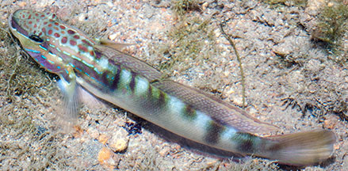
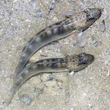
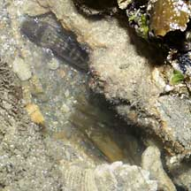
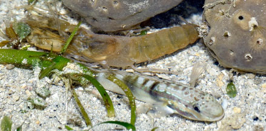
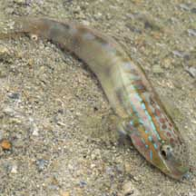
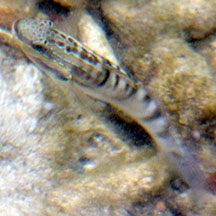

|
|
| fishes text index | photo index |
| Phylum Chordata > Subphylum Vertebrate > fishes > Family Gobiidae |
| Head-stripe
lagoon-goby Amblygobius stethophthalmus Family Gobiidae updated Sep 2020 Where seen? These colourfully, rather large gobies are often seen on our shores with coral rubble and reefs. Sometimes seen in pairs. On good reefs, they can be found in large numbers especially at night. Elsewhere found in estuaries and lagoons, on shallow sand-rubble. It makes its burrow under solid objects and is usually found hovering close to the ground. It was previously known as Amblygobius bynoensis. Features: 6-8cm long. It is among the more colourful of the larger gobies encountered in our shallow waters. There are dark freckles as well as bright spots and markings on its head. On the side of the body, it has a dark stripe edged with iridescent blue through the eye to just past the gill cover (not easily seen when viewing the fish from above). |
 Sisters Island, Aug 12 |
 Sometimes seen in pairs. Pulau Pawai, Dec 09 |
|
| What does it eat? It picks off algae. And also filters mouthfuls of sand for small animals. |
|
 This one was in a burrow occupied by a snapping shrimp, but this may be just a coincidence. Sentosa, Jun 07 |
 This one was near a snapping shrimp, but this may be just a coincidence. Cyrene, Apr 24 Photo shared by Loh Kok Sheng on facebook. |
| Head-stripe gobies on Singapore shores |
On wildsingapore
flickr
|
| Other sightings on Singapore shores |
 Flashing display! Chek Jawa, Aug 02 |
 Pulau Semakau, Feb 08 Photo shared by Dai Jiao on her flickr. |
 Terumbu Raya, Mar 09 Photo shared by Marcus Ng on flickr. |
||
Links
|